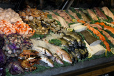

Ocean restaurant (anniston)
 Time to read: 3 min
May 23, 2017
I see (sea) food…I should be eating it..
There is a nice open-bar restauraunt named “oceans” in Anniston.
This is a very unique place to be.
They offer mongolian style cook off at the bar,
sushimi bar(those rolled up fish w seaweed and fish atop rice),
chinese (and oriental food) buffet bar,
rice pots,
fried food bar,
crab-meat salads bar,
and desert bar.
It is very upscale.
Probably Japanese ran, most are Chinese. Seems to match the table theme.
Family ran and has room for large groups in a sitting without a reservation usually(closes shortly after sunset).
Watch the sushimi, I dont think its as fresh as advertised on the chill platter(or maybe eaten so much).
Dont get me wrong, done correctly this is a beautiful delicacy and worth the buffet price on its own.
There is one thing missing from the menu that I wish would be added and that is:
Steam bar
In other words-
the locals have a few delicacies from overseas that they arent quite sharing.
And they are worth every penny.
You would only know this of course if you HAD BEEN overseas.
Namely:
Steamed Pork balls(wrapped)
"Hot buns"(unique pork, bean, etc. cooked dough balls)
The “hot buns” are extremely hard to source anywhere stateside and a sign of a surefire “locally ran from overseas” restauraunt or diner.
They put an excellent touch on the homebrew of the place, and will keep you coming back for more everytime.
Of course so will Sake and a Shochu Highball(dont overdo these).
The latter is an overly intensely flavored spiked selzer with a unique high alcohol content.
Its like fruit juice on steroids and will warm you up going down.
(Very few restauraunts make them stateside, and homebrew-literally- at that, not out of a can.)
Very clean and well ran, even if by a small crew. Its about $13 a head minus old persons or military discounts(some).
How does it do? 
NOTE:
I got sick twice, but that could very well be not eating sushimi in forever(since 2007) and also not being so much careful. If its been sitting awhile raw fish CAN make you sick or give you the runs. Locally usually best times to eat it are evening and morning when catch is fresh. So Id check to see how full the serving platter is before grabbing the fish atop the rice. The california rolls w seaweed are usually ok despite this. Im not blaming the restaurant for this YET, but just be advised. Be careful. This is a known issue w raw food in general.